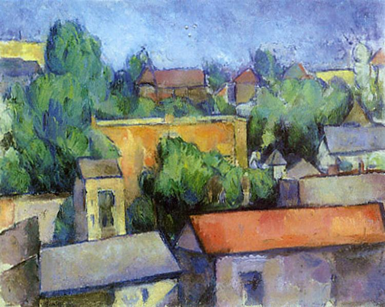
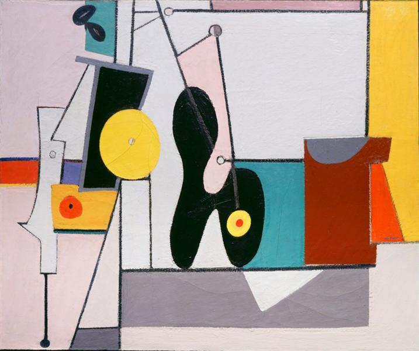
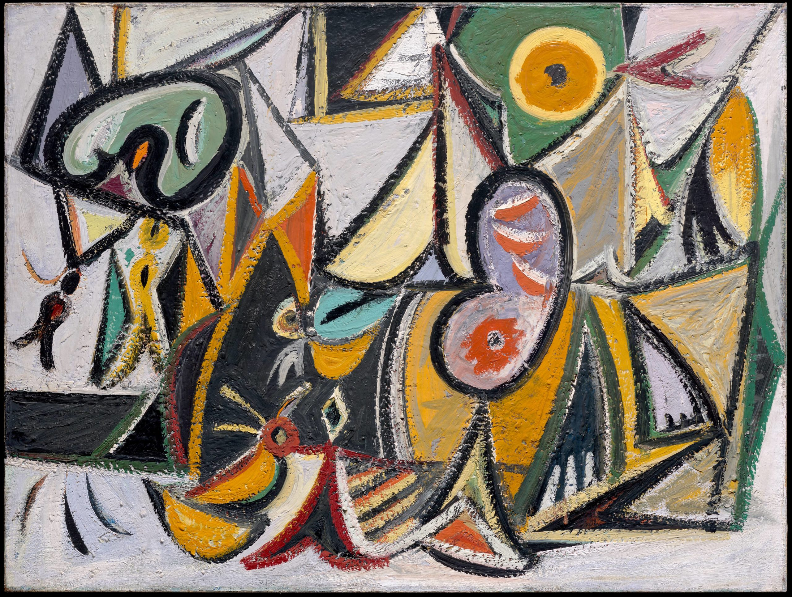
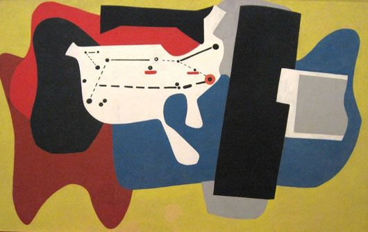
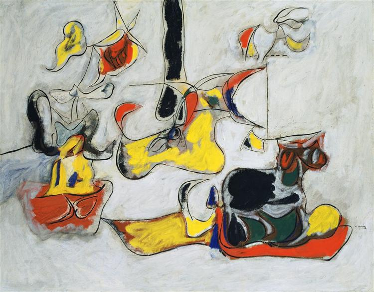
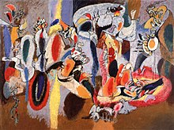
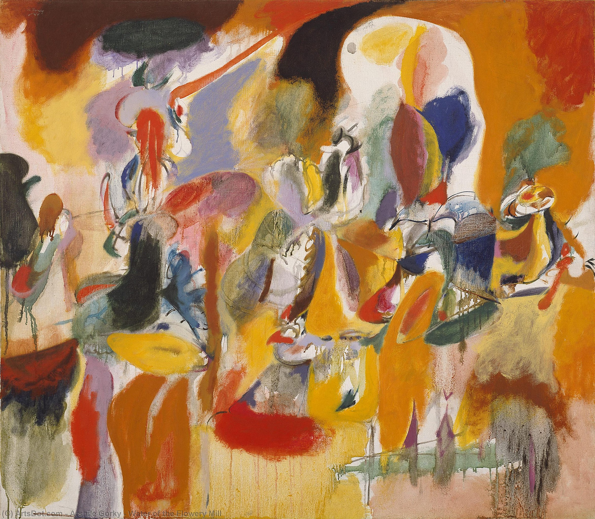
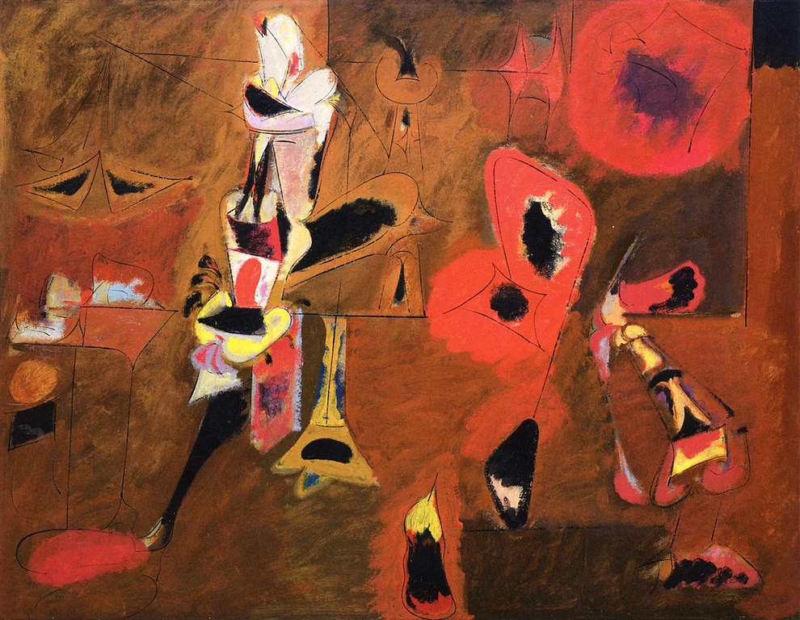

Arshile Gorky |
Nume original Vosdanik Adoian , (născut la 15 aprilie 1904-decedat la 21 iulie 1948)
pictor american, important ca legătură directă între Pictorii suprarealisti europeni și pictorii mișcării expresioniste abstracte americane. |
Anul |
Nume |
Opera |
1927 |
Staten Island
este un exemplu la superlativ al perioadei „Cézanne” a lui Gorki. În acești ani, Gorki a compus numeroase pânze după naturile și peisajele lui Paul Cézanne. Acest peisaj special a fost pictat din natură pe Staten Island, unde Gorki a căutat un deal care amintește de L'Estaque, una dintre destinațiile îndrăgite de pictură din Cézanne. Geometria rigidă, arhitectonică a caselor private domină compoziția, în timp ce paleta caldă și veselă îmbină priveliștea cartierului New York cu aspectul sudului Franței. Deși nu este tocmai o copie a lui Cézanne, este un studiu atent al stilului de abstractizare geometrică al artistului care a făcut parte din mișcarea modernă din Europa, indicând dorința lui Gorki de a absorbi în mod activ stilurile și mișcările trecutului în căutarea propriului stil individual.
|

|
1936 |
Organization
este o combinație a expunerii lui Gorki la lucrările cubiste sintetice ale lui Pablo Picasso (cu planuri plate mai puțin fragmentate și liniare, dar mai colorate), precum și ca motivele picturale organice semnături ale lui Joan Miro. Tabloul explorează o multitudine de concepte prezentate de acești artiști: planeitatea, reducerea formei, aranjarea culorilor și imaginile care decurg din inconștient, chiar dacă Gorki a preferat să lase formele sale direct inspirate din natură și realitate. În lucrarea sa ulterioară, Gorki s-a îndepărtat de la astfel de compoziții rigid aranjate în favoarea unei tehnici de pictură mai spontane, dar va rămâne mereu atent la structura picturilor sale.
|

|
1936 |
Enigmatic Combat
descrie tranziția sa de la cubism la suprarealism. În această pictură, abstracțiile sale unesc amintirile tinereții sale armene cu fantezii suprarealiste caracterizate prin forme ondulante și culori exotice.
Stilul acestei picturi se încadrează într-o abstracție suprarealistă influențată de Picasso, Kandinsky și Miró. Își arată „Lupta enigmatică” prin provocările vieții sale. |

|
1937 |
Aviation: Evolution of Forms under Aerodynamic Limitations
În această pictură murală, Gorki arată influența continuă a modernismului european. Deși sunt în mod clar implicați cu vocabularul cubist al lui Picasso și Braque, culorile strălucitoare și formele mecanizate ale acestor picturi murale sunt puternic îndatorate lui Fernand Leger. Gorki a reunit armonios diferite ramuri ale modernismului, pe care le folosește pentru a celebra aeronautica modernă, zborul și viteza. Aici, Gorki desfășoară cu succes limbajul abstracției pure cu biomorfism împreună cu o reprezentare mai literală a Statelor Unite cu căi de zbor relevante pentru Newark. Stilul modern și abstract al acestor picturi murale viu colorate a stârnit controverse în anii 1930, deoarece publicul aprecia realismul scenei americane. Fiecare panou stârnește în spectatorul entuziasmul epocii moderne a mașinilor și spectacolul călătoriilor aeriene în epoca Depresiei. Mai mult, prin plasarea publică a picturii în aeroportul din Newark, Gorki a introdus cu succes vocabularul modernist într-un segment mai mare al societății care nu privea arta.
|

|
1943 |
Garden in Sochi
Această pictură (prima dintre cel puțin șase referitoare la această temă) reprezintă reflecția nostalgică a lui Gorki asupra grădinii care făcea parte din ferma tatălui său de lângă lacul Van, în Armenia natală. O influență definitorie a operei lui Joan Miro poate fi deslușită în această pictură în ceea ce privește paleta, compoziția și formele sale, cu priceperea lui Gorki ca desenator evidentă în separarea liniilor și culorii. Dar mai precis, într-o dactilografie inedită din 1942 pe care Gorki a furnizat-o Muzeului de Artă Modernă, artistul a descris grădina și obiectele ei (inclusiv morcovi și porci spini), precum și motivele descrise, inclusiv femei care își frecau sânii de pietre pentru a vedea dorințele lor s-au împlinit și „Copacul Sfânt” cu bucăți de îmbrăcăminte rupte de la persoanele care vizitează copacul. În același document, Gorki a descris și „sh-h-h-sh-h de frunze de argint ale plopilor”. Potrivit savantului Harry Rand, Sos sau Sosi este armean pentru plopul care creează sunetul descris de Gorki. Cuvântul este și atunci un joc de cuvinte despre stațiunea rusă Soci, care probabil a fost o asociere intenționată în același mod în care artistul a ales numele Gorki. Ethel Schwabacher a identificat, de asemenea, imaginea centrală a unui pantof elegant pe care tatăl lui Gorki i-a dat-o înainte de a părăsi Armenia. Cu toate acestea, privitorul care insistă asupra unei lecturi prea specifice a imaginilor lui Gorki nu va fi pe deplin răsplătit, deoarece plăcerea mai mare este de a permite titlurilor sale să sugereze un subiect, și apoi de a permite propriilor noastre amintiri și asociații să se amestece cu ceea ce este pe pânză. În acest sens, lucrările sale permit privitorului să se delecteze cu jocul liric al culorilor, urmând ritmul formelor curbate în timp ce ele ne ajută să deschidem amintirile propriilor noastre experiențe despre care ne dăm seama că sunt comune întregii omeniri.
|

|
1944 |
The Liver is the Cock’s Comb
este una dintre cele mai mari și mai demne picturi ale lui Arshile Gorky. A combinat mai multe influențe care au marcat apariția stilului original matur al lui Gorki. Artistul a amestecat elemente de cubism și suprarealism, în special din picturile lui Pablo Picasso și Joan Miró. În plus, gama de culori din The Liver is the Cock’s Comb poate fi conectată cu lucrările artistului rus Wassily Kandinsky, foarte admirat de Gorki. O altă figură proeminentă care a ajutat la dezvoltarea artistică a lui Gorki a fost pictorul suprarealist chilian Roberto Matta. El l-a sfătuit pe Gorki să-și subțieze vopselele cu terebentină, ceea ce a permis culorilor să curgă, să se petreacă și să picure, dobândind o calitate translucidă. A făcut culorile din The Liver is the Cock’s Comb mai vibrante și senzuale decât în lucrările anterioare, cum ar fi Grădina din Soci (1943).
|

|
1944 |
Water of the Flowery Mill
face parte dintr-un grup de lucrări inspirate de peisaj pe care Gorki le-a produs în ultimii șase ani ai vieții sale. Pe baza studiului său despre o moară și un pod vechi de pe râul Housatonic din Connecticut, evocă, de asemenea, nostalgia artistului pentru Armenia, din care el și familia sa fugiseră cu aproximativ douăzeci de ani mai devreme. Influențată de suprarealism, abstracția fluidă și biomorfă a lui Gorki traduce peisajul în câmpuri plate, suprapuse de culoare și pare să anticipeze pensula gestuală a expresionismului abstract, o mișcare care a apărut în anii 1950.
|

|
1947 |
Agony
Titlul evocator al acestei lucrări și intensitatea de foc a paletei semnalează o abatere de la abstracțiile mai lirice ale lui Gorki din anii precedenți. Agonia, o scenă arzătoare, pasională, este adesea înțeleasă în legătură cu evenimentele traumatizante din viața personală a artistului, inclusiv un incendiu în studioul său și cancerul. |

|